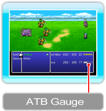

21 |
The Battle Screen / Fighting Battles |
 |
|

When you encounter an enemy (either on the field map or as part of the story), the game will shift to the battle screen. Time passes constantly during battle, and when a character's ATB (Active Time Battle) gauge reaches maximum, his or her turn will come up. ● Battle CommandsUse the battle command menu to issue commands to your characters during battle (→ P. 22). If you set the battle mode to Active, time will continue to pass while you are selecting your battle commands (→ P. 20).
● Turn OrderWhen two or more characters have their ATB gauges full, press ● Rules of EngagementYou win a battle by defeating all enemies. If the entire party is KO'd or petrified, the game will end. About the ATB GaugeThe ATB Gauge displays how much time must elapse before assorted actions can take place. It not only shows how much time is left before a character can choose a battle command; it also shows the time left before abilities, Bands, or certain other actions are launched.

● When it's Time to Run...Hold down

● End of BattleWhen you win a battle, you will earn experience points and gil, as well as items and other treasure on certain occasions.
|
 |
 |
 |